Chapter 2: The Chemical Foundation of Life¶
Introduction¶
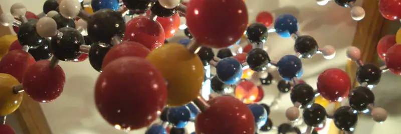
Elements in various combinations comprise all matter, including living things. Some of the most abundant elements in living organisms include carbon, hydrogen, nitrogen, oxygen, sulfur, and phosphorus. These form the nucleic acids, proteins, carbohydrates, and lipids that are the fundamental components of living matter. Biologists must understand these important building blocks and the unique structures of the atoms that comprise molecules, allowing for cells, tissues, organ systems, and entire organisms to form.
All biological processes follow the laws of physics and chemistry, so in order to understand how biological systems work, it is important to understand the underlying physics and chemistry. For example, the flow of blood within the circulatory system follows the laws of physics that regulate the modes of fluid flow. The breakdown of the large, complex molecules of food into smaller molecules—and the conversion of these to release energy to be stored in adenosine triphosphate (ATP)—is a series of chemical reactions that follow chemical laws. The properties of water and the formation of hydrogen bonds are key to understanding living processes. Recognizing the properties of acids and bases is important, for example, to our understanding of the digestive process. Therefore, the fundamentals of physics and chemistry are important for gaining insight into biological processes.
2.1 Atoms, Isotopes, Ions, and Molecules: The Building Blocks¶
Learning Objectives
By the end of this section, you will be able to do the following:
- Define matter and elements
- Describe the interrelationship between protons, neutrons, and electrons
- Compare the ways in which electrons can be donated or shared between atoms
- Explain the ways in which naturally occurring elements combine to create molecules, cells, tissues, organ systems, and organisms
At its most fundamental level, life is made up of matter. Matter is any substance that occupies space and has mass. Elements are unique forms of matter with specific chemical and physical properties that cannot break down into smaller substances by ordinary chemical reactions. There are 118 elements, but only 98 occur naturally. The remaining elements are unstable and require scientists to synthesize them in laboratories.
Each element is designated by its chemical symbol, which is a single capital letter or, when the first letter is already “taken” by another element, a combination of two letters. Some elements follow the English term for the element, such as C for carbon and Ca for calcium. Other elements’ chemical symbols derive from their Latin names. For example, the symbol for sodium is Na, referring to natrium, the Latin word for sodium.
The four elements common to all living organisms are oxygen (O), carbon (C), hydrogen (H), and nitrogen (N). In the nonliving world, elements are found in different proportions, and some elements common to living organisms are relatively rare on the earth as a whole, as Table 2.1 shows. For example, the atmosphere is rich in nitrogen and oxygen but contains little carbon and hydrogen, while the earth’s crust, although it contains oxygen and a small amount of hydrogen, has little nitrogen and carbon. In spite of their differences in abundance, all elements and the chemical reactions between them obey the same chemical and physical laws regardless of whether they are a part of the living or nonliving world.
Table 2.1
| Approximate Percentage of Elements in Living Organisms (Humans) Compared to the Nonliving World | |||
|---|---|---|---|
| Element | Life (Humans) | Atmosphere | Earth’s Crust |
| Oxygen (O) | 65% | 21% | 46% |
| Carbon (C) | 18% | trace | trace |
| Hydrogen (H) | 10% | trace | 0.1% |
| Nitrogen (N) | 3% | 78% | trace |
The Structure of the Atom¶
To understand how elements come together, we must first discuss the element's smallest component or building block, the atom. An atom is the smallest unit of matter that retains all of the element's chemical properties. For example, one gold atom has all of the properties of gold, like its chemical reactivity. A gold coin is simply a very large number of gold atoms molded into the shape of a coin and contains small amounts of other elements known as impurities. We cannot break down gold atoms into anything smaller while still retaining the properties of gold.
An atom is composed of two regions: the nucleus, which is in the atom's center and contains protons and neutrons. The atom's outermost region holds its electrons in orbit around the nucleus, as Figure 2.2 illustrates. Atoms contain protons, electrons, and neutrons, among other subatomic particles. The most common isotope of hydrogen (H) is the only exception and is made of one proton and one electron with no neutrons.
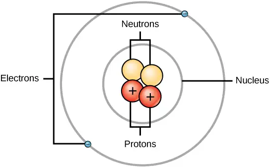
Protons and neutrons have approximately the same mass, about 1.67 × 10-24 grams. Scientists arbitrarily define this amount of mass as one atomic mass unit (amu) or one Dalton, as Table 2.2 shows. Although similar in mass, protons and neutrons differ in their electric charge. A proton is positively charged; whereas, a neutron is uncharged. Therefore, the number of neutrons in an atom contributes significantly to its mass, but not to its charge. Electrons are much smaller in mass than protons, weighing only 9.11 × 10-28 grams, or about 1/1800 of an atomic mass unit. Hence, they do not contribute much to an element’s overall atomic mass. Therefore, when considering atomic mass, it is customary to ignore the mass of any electrons and calculate the atom’s mass based on the number of protons and neutrons alone. Although not significant contributors to mass, electrons do contribute greatly to the atom’s charge, as each electron has a negative charge equal to the proton's positive charge. In uncharged, neutral atoms, the number of electrons orbiting the nucleus is equal to the number of protons inside the nucleus. In these atoms, the positive and negative charges cancel each other out, leading to an atom with no net charge.
Accounting for the sizes of protons, neutrons, and electrons, most of the atom's volume—greater than 99 percent—is empty space. With all this empty space, one might ask why so-called solid objects do not just pass through one another. The reason they do not is that the electrons that surround all atoms are negatively charged and negative charges repel each other.
Table 2.2
| Protons, Neutrons, and Electrons | |||
|---|---|---|---|
| Charge | Mass (amu) | Location | |
| Proton | +1 | 1 | nucleus |
| Neutron | 0 | 1 | nucleus |
| Electron | –1 | 0 | orbitals |
Atomic Number and Mass¶
Atoms of each element contain a characteristic number of protons and electrons. The number of protons determines an element’s atomic number, which scientists use to distinguish one element from another. The number of neutrons is variable, resulting in isotopes, which are different forms of the same atom that vary only in the number of neutrons they possess. Together, the number of protons and neutrons determine an element’s mass number, as Figure 2.3 illustrates. Note that we disregard the small contribution of mass from electrons in calculating the mass number. We can use this approximation of mass to easily calculate how many neutrons an element has by simply subtracting the number of protons from the mass number. Since an element’s isotopes will have slightly different mass numbers, scientists also determine the atomic weight, which is the calculated mean of the atomic weights of its naturally occurring isotopes. Often, the resulting number contains a fraction. For example, the atomic mass of chlorine (Cl) is 35.45 because chlorine is composed of several isotopes, some (the majority) with atomic mass 35 (17 protons and 18 neutrons) and some with atomic mass 37 (17 protons and 20 neutrons).
Visual Connection
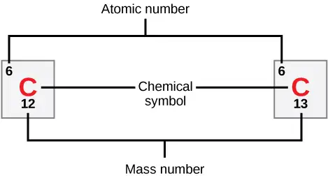
How many neutrons do carbon-12 and carbon-13 have, respectively?
Isotopes¶
Isotopes are different forms of an element that have the same number of protons but a different number of neutrons. Some elements—such as carbon, potassium, and uranium—have naturally occurring isotopes. Carbon-12 contains six protons, six neutrons, and six electrons; therefore, it has a mass number of 12 (six protons and six neutrons). Carbon-14 contains six protons, eight neutrons, and six electrons; its atomic mass is 14 (six protons and eight neutrons). These two alternate forms of carbon are isotopes. Some isotopes may emit neutrons, protons, and electrons, and attain a more stable atomic configuration (lower level of potential energy); these are radioactive isotopes, or radioisotopes. Radioactive decay (carbon-14 decaying to eventually become nitrogen-14) describes the energy loss that occurs when an unstable atom’s nucleus releases radiation.
Evolution Connection: Carbon Dating
Carbon is normally present in the atmosphere in the form of gaseous compounds like carbon dioxide and methane. Carbon-14 (14C) is a naturally occurring radioisotope that is created in the atmosphere from atmospheric 14N (nitrogen) by the addition of a neutron and the loss of a proton because of cosmic rays. This is a continuous process, so more 14C is always being created. As a living organism incorporates 14C initially as carbon dioxide fixed in the process of photosynthesis, the relative amount of 14C in its body is equal to the concentration of 14C in the atmosphere. When an organism dies, it is no longer ingesting 14C, so the ratio between 14C and 12C will decline as 14C decays gradually to 14N by a process called beta decay—electrons or positrons emission. This decay emits energy in a slow process.
After approximately 5,730 years, half of the starting concentration of 14C will convert back to 14N. We call the time it takes for half of the original concentration of an isotope to decay back to its more stable form its half-life. Because the half-life of 14C is long, scientists use it to date formerly living objects such as old bones or wood. Comparing the ratio of the 14C concentration in an object to the amount of 14C in the atmosphere, scientists can determine the amount of the isotope that has not yet decayed. On the basis of this amount, Figure 2.4 shows that we can calculate the age of the material, such as the pygmy mammoth, with accuracy if it is not much older than about 50,000 years. Other elements have isotopes with different half lives. For example, 40K (potassium-40) has a half-life of 1.25 billion years, and 235U (Uranium 235) has a half-life of about 700 million years. Through the use of radiometric dating, scientists can study the age of fossils or other remains of extinct organisms to understand how organisms have evolved from earlier species.
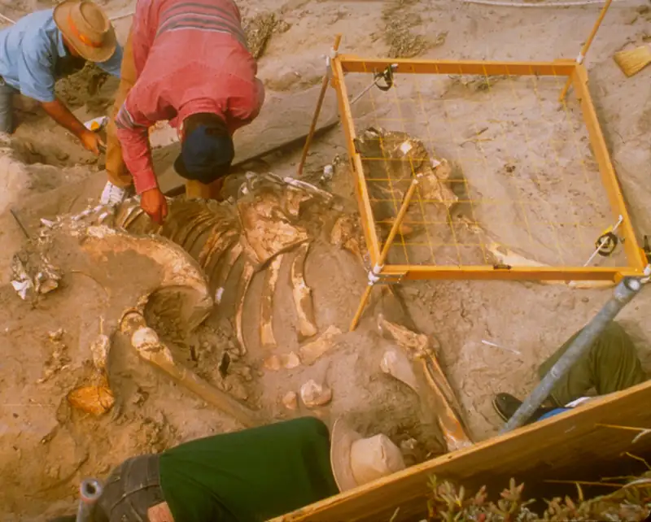
Interactive
To learn more about atoms, isotopes, and how to tell one isotope from another, run the simulation.
atoms_isotopes
The Periodic Table¶
The periodic table organizes and displays different elements. Devised by Russian chemist Dmitri Mendeleev (1834–1907) in 1869, the table groups elements that, although unique, share certain chemical properties with other elements. The properties of elements are responsible for their physical state at room temperature: they may be gases, solids, or liquids. Elements also have specific chemical reactivity, the ability to combine and to chemically bond with each other.
In the periodic table in Figure 2.5, the elements are organized and displayed according to their atomic number and are arranged in a series of rows and columns based on shared chemical and physical properties. In addition to providing the atomic number for each element, the periodic table also displays the element’s atomic mass. Looking at carbon, for example, its symbol (C) and name appear, as well as its atomic number of six (in the upper left-hand corner) and its atomic mass of 12.01.
![The periodic table consists of eighteen groups and seven periods. Each element has its own square. Within each square is the following information; the atomic number, the symbol, the relative atomic mass, and the name. For example, hydrogen's atomic number is 1, symbol is the letter H; relative atomic mass is 1.01, and name is hydrogen. Two additional rows of elements, known as the lanthanides and actinides, are placed beneath the main table. The lanthanides include elements 57 through 71 and belong in period seven between groups three and four. The actinides include elements 89 through 98 and belong in period eight between the same groups. These elements are placed separately to make the table more compact. For each element, the name, atomic symbol, atomic number, and atomic mass are provided. The atomic number is a whole number that represents the number of protons. The atomic mass, which is the average mass of different isotopes, is estimated to two decimal places. The elements are divided into three categories: metals, nonmetals and metalloids. These form a diagonal line from period two, group thirteen to period six, group seventeen. All elements to the left of the metalloids are metals, and all elements to the right are nonmetals.](img/figure-02-01-04.webp)
The periodic table groups elements according to chemical properties. Scientists base the differences in chemical reactivity between the elements on the number and spatial distribution of an atom’s electrons. Atoms that chemically react and bond to each other form molecules. Molecules are simply two or more atoms chemically bonded together. Logically, when two atoms chemically bond to form a molecule, their electrons, which form the outermost region of each atom, come together first as the atoms form a chemical bond.
Electron Shells and the Bohr Model¶
Note that there is a connection between the number of protons in an element, the atomic number that distinguishes one element from another, and the number of electrons it has. In all electrically neutral atoms, the number of electrons is the same as the number of protons. Thus, each element, at least when electrically neutral, has a characteristic number of electrons equal to its atomic number.
In 1913, Danish scientist Niels Bohr (1885–1962) developed an early model of the atom. The Bohr model shows the atom as a central nucleus containing protons and neutrons, with the electrons in electron shells or energy levels at specific distances from the nucleus, as Figure 2.6 illustrates. These energy levels are designated by a number and the symbol “n.” For example, 1n represents the first energy level located closest to the nucleus.
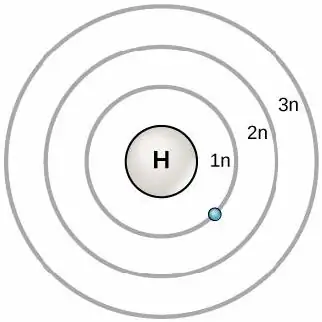
Electrons fill orbitals in a consistent order: they first fill the orbitals closest to the nucleus, then they continue to fill orbitals of increasing energy further from the nucleus. If there are multiple orbitals of equal energy, they fill with one electron in each energy level before adding a second electron. The electrons of the outermost energy level determine the atom's energetic stability and its tendency to form chemical bonds with other atoms to form molecules.
Under standard conditions, atoms fill the inner shells first, often resulting in a variable number of electrons in the outermost shell. The innermost shell has a maximum of two valence electrons but the next two electron shells can each have eight valence electrons. This is known as the octet rule, which states, with the exception of the innermost shell, that atoms are more stable energetically when they have eight electrons in their valence shell, the outermost electron shell. Figure 2.7 shows examples of some neutral atoms and their electron configurations. Notice that in Figure 2.7, helium has a complete outer electron shell, with two electrons filling its first and only shell. Similarly, neon has a complete outer 2n shell containing eight electrons. In contrast, chlorine and sodium have seven and one in their outer shells, respectively, but theoretically they would be more energetically stable if they followed the octet rule and had eight valence electrons.
Visual Connection
![Bohr diagrams of elements from groups 1, 14, 17 and 18, and periods 1, 2 and 3 are shown. Period 1, in which the 1n shell is filling, contains hydrogen and helium. Hydrogen, in group 1, has one valence electron. Helium, in group 18, has two valence electrons. The 1n shell holds a maximum of two electrons, so the shell is full and the electron configuration is stable. Period 2, in which the 2n shell is filling, contains lithium, carbon, fluorine, and neon. Lithium, in group 1, has 1 valence electron. Carbon, in group 14, has 4 valence electrons. Fluorine, in group 17, has 7 valence electrons. Neon, in group 18, has 8 valence electrons, a full octet. Period 3, in which the 3n shell is filling, contains sodium, silicon, chlorine, and argon. Sodium, in group 1, has 1 valence electron. Silicon, in group 14, has 4 valence electrons. Chlorine, in group 17, has 7 valence electrons. Argon, in group 18, has 8 valence electrons, a full octet.](img/figure-02-01-06.webp)
An atom may give, take, or share electrons with another atom to achieve a full valence shell, the most stable electron configuration. Looking at this figure, how many electrons do elements in group 1 need to lose in order to achieve a stable electron configuration? How many electrons do elements in groups 14 and 17 need to gain to achieve a stable configuration?
Understanding that the periodic table's organization is based on the total number of protons (and electrons) helps us know how electrons distribute themselves among the shells. The periodic table is arranged in columns and rows based on the number of electrons and their location. Examine more closely some of the elements in the table’s far right column in Figure 2.5. The group 18 atoms helium (He), neon (Ne), and argon (Ar) all have filled outer electron shells, making it unnecessary for them to share electrons with other atoms to attain stability. They are highly stable as single atoms. Because they are non reactive, scientists coin them inert (or noble gases). Compare this to the group 1 elements in the left-hand column. These elements, including hydrogen (H), lithium (Li), and sodium (Na), all have one electron in their outermost shells. That means that they can achieve a stable configuration and a filled outer shell by donating or sharing one electron with another atom or a molecule such as water. Hydrogen will donate or share its electron to achieve this configuration, while lithium and sodium will donate their electron to become stable. As a result of losing a negatively charged electron, they become positively charged ions. Group 17 elements, including fluorine and chlorine, have seven electrons in their outmost shells, so they tend to fill this shell with an electron from other atoms or molecules, making them negatively charged ions. Group 14 elements, of which carbon is the most important to living systems, have four electrons in their outer shell allowing them to make several covalent bonds (discussed below) with other atoms. Thus, the periodic table's columns represent the potential shared state of these elements’ outer electron shells that is responsible for their similar chemical characteristics.
Electron Orbitals¶
Although useful to explain the reactivity and chemical bonding of certain elements, the Bohr model does not accurately reflect how electrons spatially distribute themselves around the nucleus. They do not circle the nucleus like the earth orbits the sun, but we find them in electron orbitals. These relatively complex shapes result from the fact that electrons behave not just like particles, but also like waves. Mathematical equations from quantum mechanics, which scientists call wave functions, can predict within a certain level of probability where an electron might be at any given time. Scientists call the area where an electron is most likely to be found its orbital.
Recall that the Bohr model depicts an atom’s electron shell configuration. Within each electron shell are subshells, and each subshell has a specified number of orbitals containing electrons. While it is impossible to calculate exactly an electron's location, scientists know that it is most probably located within its orbital path. The letter s, p, d, and f designate the subshells. The s subshell is spherical in shape and has one orbital. Principal shell 1n has only a single s orbital, which can hold two electrons. Principal shell 2n has one s and one p subshell, and can hold a total of eight electrons. The p subshell has three dumbbell-shaped orbitals, as Figure 2.8 illustrates. Subshells d and f have more complex shapes and contain five and seven orbitals, respectively. We do not show these in the illustration. Principal shell 3n has s, p, and d subshells and can hold 18 electrons. Principal shell 4n has s, p, d and f orbitals and can hold 32 electrons. Moving away from the nucleus, the number of electrons and orbitals in the energy levels increases. Progressing from one atom to the next in the periodic table, we can determine the electron structure by fitting an extra electron into the next available orbital.
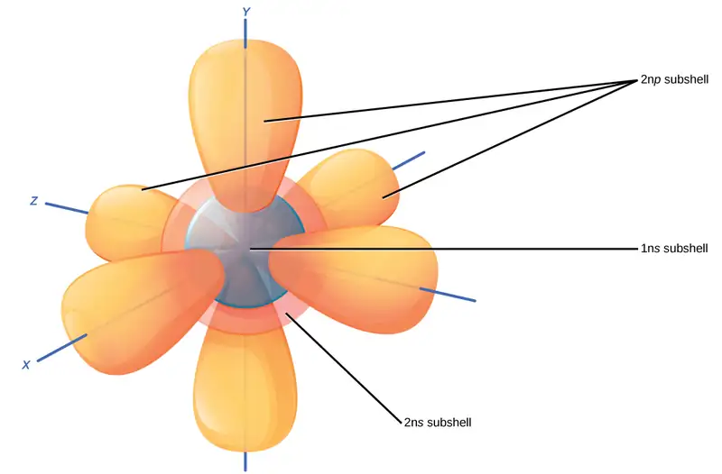
The closest orbital to the nucleus, the 1s orbital, can hold up to two electrons. This orbital is equivalent to the Bohr model's innermost electron shell. The 1s orbital is the closest orbital to the nucleus, and it is always filled first, before any other orbital fills. Hydrogen has one electron; therefore, it occupies only one spot within the 1s orbital. We designate this as 1s1, where the superscripted 1 refers to the one electron within the 1s orbital. Helium has two electrons; therefore, it can completely fill the 1s orbital with its two electrons. We designate this as 1s2, referring to the two electrons of helium in the 1s orbital. On the periodic table Figure 2.5, hydrogen and helium are the only two elements in the first row (period). This is because they only have electrons in their first shell, the 1s orbital. Hydrogen and helium are the only two elements that have the 1s and no other electron orbitals in the electrically neutral state.
The second electron shell may contain eight electrons. This shell contains another spherical s orbital and three “dumbbell” shaped p orbitals, each of which can hold two electrons, as Figure 2.8 shows. After the 1s orbital fills, the second electron shell fills, first filling its 2s orbital and then its three p orbitals. When filling the p orbitals, each takes a single electron. Once each p orbital has an electron, it may add a second. Lithium (Li) contains three electrons that occupy the first and second shells. Two electrons fill the 1s orbital, and the third electron then fills the 2s orbital. Its electron configuration is 1s22s1. Neon (Ne), alternatively, has a total of ten electrons: two are in its innermost 1s orbital and eight fill its second shell (two each in the 2s and three p orbitals). Thus it is an inert gas and energetically stable as a single atom that will rarely form a chemical bond with other atoms. Larger elements have additional orbitals, comprising the third electron shell. While the concepts of electron shells and orbitals are closely related, orbitals provide a more accurate depiction of an atom's electron configuration because the orbital model specifies the different shapes and special orientations of all the places that electrons may occupy.
Interactive
Watch this visual animation to see the spatial arrangement of the p and s orbitals. orbitals
Chemical Reactions and Molecules¶
All elements are most stable when their outermost shell is filled with electrons according to the octet rule. This is because it is energetically favorable for atoms to be in that configuration and it makes them stable. However, since not all elements have enough electrons to fill their outermost shells, atoms form chemical bonds with other atoms thereby obtaining the electrons they need to attain a stable electron configuration. When two or more atoms chemically bond with each other, the resultant chemical structure is a molecule. The familiar water molecule, H2O, consists of two hydrogen atoms and one oxygen atom. These bond together to form water, as Figure 2.9 illustrates. Atoms can form molecules by donating, accepting, or sharing electrons to fill their outer shells.
![In the first image, an oxygen atom is shown with six valence electrons. Four of these valence electrons form pairs at the top and right sides of the valence shell. The other two electrons are alone on the bottom and left sides. A hydrogen atom sits next to each the lone electron of the oxygen. Each hydrogen has only one valence electron. An arrow indicates that a reaction takes place. After the reaction, in the second image, each unpaired electron in the oxygen joins an electron from one of the hydrogen atoms so that the valence rings are now connected together. The bond that forms between oxygen and hydrogen can also be represented by a dash.](img/figure-02-01-17.webp)
Chemical reactions occur when two or more atoms bond together to form molecules or when bonded atoms break apart. Scientists call the substances used in the beginning of a chemical reaction reactants (usually on the left side of a chemical equation), and we call the substances at the end of the reaction products (usually on the right side of a chemical equation). We typically draw an arrow between the reactants and products to indicate the chemical reaction's direction. This direction is not always a “one-way street.” To create the water molecule above, the chemical equation would be:
An example of a simple chemical reaction is breaking down hydrogen peroxide molecules, each of which consists of two hydrogen atoms bonded to two oxygen atoms (H2O2). The reactant hydrogen peroxide breaks down into water, containing one oxygen atom bound to two hydrogen atoms (H2O), and oxygen, which consists of two bonded oxygen atoms (O2). In the equation below, the reaction includes two hydrogen peroxide molecules and two water molecules. This is an example of a balanced chemical equation, wherein each element's number of atoms is the same on each side of the equation. According to the law of conservation of matter, the number of atoms before and after a chemical reaction should be equal, such that no atoms are, under normal circumstances, created or destroyed.
Even though all of the reactants and products of this reaction are molecules (each atom remains bonded to at least one other atom), in this reaction only hydrogen peroxide and water are representatives of compounds: they contain atoms of more than one type of element. Molecular oxygen, alternatively, as Figure 2.10 shows, consists of two doubly bonded oxygen atoms and is not classified as a compound but as a homonuclear molecule.
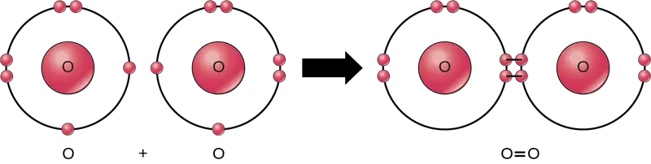
Some chemical reactions, such as the one above, can proceed in one direction until they expend all the reactants. The equations that describe these reactions contain a unidirectional arrow and are irreversible. Reversible reactions are those that can go in either direction. In reversible reactions, reactants turn into products, but when the product's concentration goes beyond a certain threshold (characteristic of the particular reaction), some of these products convert back into reactants. At this point, product and reactant designations reverse. This back and forth continues until a certain relative balance between reactants and products occurs—a state called equilibrium. A chemical equation with a double headed arrow pointing towards both the reactants and products often denote these reversible reaction situations.
For example, in human blood, excess hydrogen ions (H+) bind to bicarbonate ions (HCO3-) forming an equilibrium state with carbonic acid (H2CO3). If we added carbonic acid to this system, some of it would convert to bicarbonate and hydrogen ions.
However, biological reactions rarely obtain equilibrium because the concentrations of the reactants or products or both are constantly changing, often with one reaction's product a reactant for another. To return to the example of excess hydrogen ions in the blood, forming carbonic acid will be the reaction's major direction. However, the carbonic acid can also leave the body as carbon dioxide gas (via exhalation) instead of converting back to bicarbonate ion, thus driving the reaction to the right by the law of mass action. These reactions are important for maintaining homeostasis in our blood.
Ions and Ionic Bonds¶
Some atoms are more stable when they gain or lose an electron (or possibly two) and form ions. This fills their outermost electron shell and makes them energetically more stable. Because the number of electrons does not equal the number of protons, each ion has a net charge. Cations are positive ions that form by losing electrons. Negative ions form by gaining electrons, which we call anions. We designate anions by their elemental name and change the ending to “-ide”, thus the anion of chlorine is chloride, and the anion of sulfur is sulfide.
Scientists refer to this movement of electrons from one element to another as electron transfer. As Figure 2.11 illustrates, sodium (Na) only has one electron in its outer electron shell. It takes less energy for sodium to donate that one electron than it does to accept seven more electrons to fill the outer shell. If sodium loses an electron, it now has 11 protons, 11 neutrons, and only 10 electrons, leaving it with an overall charge of +1. We now refer to it as a sodium ion. Chlorine (Cl) in its lowest energy state (called the ground state) has seven electrons in its outer shell. Again, it is more energy-efficient for chlorine to gain one electron than to lose seven. Therefore, it tends to gain an electron to create an ion with 17 protons, 17 neutrons, and 18 electrons, giving it a net negative (–1) charge. We now refer to it as a chloride ion. In this example, sodium will donate its one electron to empty its shell, and chlorine will accept that electron to fill its shell. Both ions now satisfy the octet rule and have complete outermost shells. Because the number of electrons is no longer equal to the number of protons, each is now an ion and has a +1 (sodium cation) or –1 (chloride anion) charge. Note that these transactions can normally only take place simultaneously: in order for a sodium atom to lose an electron, it must be in the presence of a suitable recipient like a chlorine atom.
![A sodium and a chlorine atom sit side by side. The sodium atom has one valence electron, and the chlorine atom has seven. Six of chlorines electrons form pairs at the top, bottom and right sides of the valence shell. The seventh electron sits alone on the left side. The sodium atom transfers its valence electron to chlorines valence shell, where it pairs with the unpaired left electron. An arrow indicates a reaction takes place. After the reaction takes place, the sodium becomes a cation with a charge of plus one and an empty valence shell, while the chlorine becomes an anion with a charge of minus one and a full valence shell containing eight electrons.](img/figure-02-01-10.webp)
Ionic bonds form between ions with opposite charges. For instance, positively charged sodium ions and negatively charged chloride ions bond together to make crystals of sodium chloride, or table salt, creating a crystalline molecule with zero net charge.
Physiologists refer to certain salts as electrolytes (including sodium, potassium, and calcium), ions necessary for nerve impulse conduction, muscle contractions, and water balance. Many sports drinks and dietary supplements provide these ions to replace those lost from the body via sweating during exercise.
Covalent Bonds and Other Bonds and Interactions¶
Another way to satisfy the octet rule is by sharing electrons between atoms to form covalent bonds. These bonds are much more common than ionic bonds in the molecules of living organisms. We commonly find covalent bonds in carbon-based organic molecules, such as our DNA and proteins. We also find covalent bonds in inorganic molecules like H2O, CO2, and O2. The bonds may share one, two, or three pairs of electrons, making single, double, and triple bonds, respectively. The more covalent bonds between two atoms, the stronger their connection. Thus, triple bonds are the strongest.
The strength of different levels of covalent bonding is one of the main reasons living organisms have a difficult time in acquiring nitrogen for use in constructing their molecules, even though molecular nitrogen, N2, is the most abundant gas in the atmosphere. Molecular nitrogen consists of two nitrogen atoms triple bonded to each other and, as with all molecules, sharing these three pairs of electrons between the two nitrogen atoms allows for filling their outer electron shells, making the molecule more stable than the individual nitrogen atoms. This strong triple bond makes it difficult for living systems to break apart this nitrogen in order to use it as constituents of proteins and DNA.
Forming water molecules provides an example of covalent bonding. Covalent bonds bind the hydrogen and oxygen atoms that combine to form water molecules as Figure 2.9 shows. The electron from the hydrogen splits its time between the hydrogen atoms' incomplete outer shell and the oxygen atoms' incomplete outer shell. To completely fill the oxygen's outer shell, which has six electrons but which would be more stable with eight, two electrons (one from each hydrogen atom) are needed: hence, the well-known formula H2O. The two elements share the electrons to fill the outer shell of each, making both elements more stable.
Interactive
View this short video to see an animation of ionic and covalent bonding. ionic_covalent
Polar Covalent Bonds¶
There are two types of covalent bonds: polar and nonpolar. In a polar covalent bond, Figure 2.12 shows atoms unequally share the electrons as the electrons are attracted more to one nucleus than the other. Because of the unequal electron distribution between the atoms of different elements, a slightly positive (δ+) or slightly negative (δ–) charge develops. This partial charge is an important property of water and accounts for many of its characteristics.
Water is a polar molecule, with the hydrogen atoms acquiring a partial positive charge and the oxygen a partial negative charge. This occurs because the oxygen atom's nucleus is more attractive to the hydrogen atoms' electrons than the hydrogen nucleus is to the oxygen’s electrons. Thus, oxygen has a higher electronegativity than hydrogen and the shared electrons spend more time near the oxygen nucleus than the hydrogen atoms' nucleus, giving the oxygen and hydrogen atoms slightly negative and positive charges, respectively. Another way of stating this is that the probability of finding a shared electron near an oxygen nucleus is more likely than finding it near a hydrogen nucleus. Either way, the atom’s relative electronegativity contributes to developing partial charges whenever one element is significantly more electronegative than the other, and the charges that these polar bonds generate may then be used to form hydrogen bonds based on the attraction of opposite partial charges. (Hydrogen bonds, which we discuss in detail below, are weak bonds between slightly positively charged hydrogen atoms to slightly negatively charged atoms in other molecules.) Since macromolecules often have atoms within them that differ in electronegativity, polar bonds are often present in organic molecules.
Nonpolar Covalent Bonds¶
Nonpolar covalent bonds form between two atoms of the same element or between different elements that share electrons equally. For example, molecular oxygen (O2) is nonpolar because the electrons distribute equally between the two oxygen atoms.
Figure 2.12 also shows another example of a nonpolar covalent bond—methane (CH4). Carbon has four electrons in its outermost shell and needs four more to fill it. It obtains these four from four hydrogen atoms, each atom providing one, making a stable outer shell of eight electrons. Carbon and hydrogen do not have the same electronegativity but are similar; thus, nonpolar bonds form. The hydrogen atoms each need one electron for their outermost shell, which is filled when it contains two electrons. These elements share the electrons equally among the carbons and the hydrogen atoms, creating a nonpolar covalent molecule.
![Table compares water, methane and carbon dioxide molecules. In water, oxygen has a stronger pull on electrons than hydrogen resulting in a polar covalent O-H bond. Likewise in carbon dioxide the oxygen has a stronger pull on electrons than carbon and the bond is polar covalent. However, water has a bent shape because two lone pairs of electrons push the hydrogen atoms together so the molecule is polar. By contrast carbon dioxide has two double bonds that repel each other, resulting in a linear shape. The polar bonds in carbon dioxide cancel each other out, resulting in a nonpolar molecule. In methane, the bond between carbon and hydrogen is nonpolar and the molecule is a symmetrical tetrahedron with hydrogens spaced as far apart as possible on the three-dimensional sphere. Since methane is symmetrical with nonpolar bonds, it is a nonpolar molecule.](img/figure-02-01-20.webp)
Hydrogen Bonds and Van Der Waals Interactions¶
Ionic and covalent bonds between elements require energy to break. Ionic bonds are not as strong as covalent, which determines their behavior in biological systems. However, not all bonds are ionic or covalent bonds. Weaker bonds can also form between molecules. Two weak bonds that occur frequently are hydrogen bonds and van der Waals interactions. Without these two types of bonds, life as we know it would not exist. Hydrogen bonds provide many of the critical, life-sustaining properties of water and also stabilize the structures of proteins and DNA, the building block of cells.
When polar covalent bonds containing hydrogen form, the hydrogen in that bond has a slightly positive charge because hydrogen’s electron is pulled more strongly toward the other element and away from the hydrogen. Because the hydrogen is slightly positive, it will be attracted to neighboring negative charges. When this happens, a weak interaction occurs between the hydrogen's δ+ from one molecule and the molecule's δ– charge on another molecule with the more electronegative atoms, usually oxygen. Scientists call this interaction a hydrogen bond. This type of bond is common and occurs regularly between water molecules. Individual hydrogen bonds are weak and easily broken; however, they occur in very large numbers in water and in organic polymers, creating a major force in combination. Hydrogen bonds are also responsible for zipping together the DNA double helix.
Like hydrogen bonds, van der Waals interactions are weak attractions or interactions between molecules. Van der Waals attractions can occur between any two or more molecules and are dependent on slight fluctuations of the electron densities, which are not always symmetrical around an atom. For these attractions to happen, the molecules need to be very close to one another. These bonds—along with ionic, covalent, and hydrogen bonds—contribute to the proteins' three-dimensional structure in our cells that is necessary for their proper function.
Career Connection: Pharmaceutical Chemist
Pharmaceutical chemists are responsible for developing new drugs and trying to determine the mode of action of both old and new drugs. They are involved in every step of the drug development process. We can find drugs in the natural environment or we can synthesize them in the laboratory. In many cases, chemists change potential drugs from nature chemically in the laboratory to make them safer and more effective, and sometimes synthetic versions of drugs substitute for the version we find in nature.
After a drug's initial discovery or synthesis, the chemist then develops the drug, perhaps chemically altering it, testing it to see if it is toxic, and then designing methods for efficient large-scale production. Then, the process of approving the drug for human use begins. In the United States, the Food and Drug Administration (FDA) handles drug approval. This involves a series of large-scale experiments using human subjects to ensure the drug is not harmful and effectively treats the condition for which it is intended. This process often takes several years and requires the participation of physicians and scientists, in addition to chemists, to complete testing and gain approval.
An example of a drug that was originally discovered in a living organism is Paclitaxel (Taxol), an anti-cancer drug used to treat breast cancer. This drug was discovered in the bark of the pacific yew tree. Another example is aspirin, originally isolated from willow tree bark. Finding drugs often means testing hundreds of samples of plants, fungi, and other forms of life to see if they contain any biologically active compounds. Sometimes, traditional medicine can give modern medicine clues as to where to find an active compound. For example, mankind has used willow bark to make medicine for thousands of years, dating back to ancient Egypt. However, it was not until the late 1800s that scientists and pharmaceutical companies purified and marketed the aspirin molecule, acetylsalicylic acid, for human use.
Occasionally, drugs developed for one use have unforeseen effects that allow usage in other, unrelated ways. For example, scientists originally developed the drug minoxidil (Rogaine) to treat high blood pressure. When tested on humans, researchers noticed that individuals taking the drug would grow new hair. Eventually the pharmaceutical company marketed the drug to people with baldness to restore lost hair.
Finally, a pharmaceutical chemist may discover negative effects or even lack of effects. In the early 1960s, inventors, doctors, and even a U.S. senator claimed anti-cancer properties of a new drug, Krebiozen, and began to market and sell it aggressively. Through the process of infrared spectrometry, FDA chemist Alma Levant Hayden and her team discovered that the "miracle drug" was nothing more than a common compound called creatine. A pharmaceutical chemist's career may involve detective work, experimentation, and drug development, all with the goal of making human beings healthier.
2.2 Water¶
Learning Objectives
By the end of this section, you will be able to do the following:
- Describe the properties of water that are critical to maintaining life
- Explain why water is an excellent solvent
- Provide examples of water’s cohesive and adhesive properties
- Discuss the role of acids, bases, and buffers in homeostasis
Why do scientists spend time looking for water on other planets? Why is water so important? It is because water is essential to life as we know it. Water is one of the more abundant molecules and the one most critical to life on Earth. Water comprises approximately 60–70 percent of the human body. Without it, life as we know it simply would not exist.
The polarity of the water molecule and its resulting hydrogen bonding make water a unique substance with special properties that are intimately tied to the processes of life. Life originally evolved in a watery environment, and most of an organism’s cellular chemistry and metabolism occur inside the watery contents of the cell’s cytoplasm. Special properties of water are its high heat capacity and heat of vaporization, its ability to dissolve polar molecules, its cohesive and adhesive properties, and its dissociation into ions that leads to generating pH. Understanding these characteristics of water helps to elucidate its importance in maintaining life.
Water’s Polarity¶
One of water’s important properties is that it is composed of polar molecules: the hydrogen and oxygen within water molecules (H2O) form polar covalent bonds. While there is no net charge to a water molecule, water's polarity creates a slightly positive charge on hydrogen and a slightly negative charge on oxygen, contributing to water’s properties of attraction. Water generates charges because oxygen is more electronegative than hydrogen, making it more likely that a shared electron would be near the oxygen nucleus than the hydrogen nucleus, thus generating the partial negative charge near the oxygen.
As a result of water’s polarity, each water molecule attracts other water molecules because of the opposite charges between water molecules, forming hydrogen bonds. Water also attracts or is attracted to other polar molecules and ions. We call a polar substance that interacts readily with or dissolves in water hydrophilic (hydro- = “water”; -philic = “loving”). In contrast, nonpolar molecules such as oils and fats do not interact well with water, as Figure 2.13 shows. A good example of this is vinegar and oil salad dressing (an acidic water solution). We call such nonpolar compounds hydrophobic (hydro- = “water”; -phobic = “fearing”).
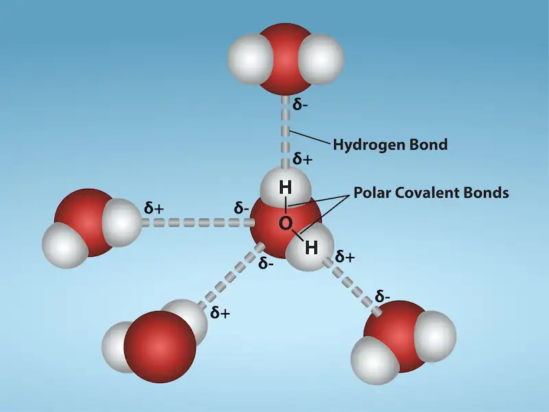
Water’s States: Gas, Liquid, and Solid¶
The formation of hydrogen bonds is an important quality of the liquid water that is crucial to life as we know it. As water molecules make hydrogen bonds with each other, water takes on some unique chemical characteristics compared to other liquids and, since living things have a high water content, understanding these chemical features is key to understanding life. In liquid water, hydrogen bonds constantly form and break as the water molecules slide past each other. The water molecules' motion (kinetic energy) causes the bonds to break due to the heat contained in the system. When the heat rises as water boils, the water molecules' higher kinetic energy causes the hydrogen bonds to break completely and allows water molecules to escape into the air as gas (steam or water vapor). Alternatively, when water temperature reduces and water freezes, the water molecules form a crystalline structure maintained by hydrogen bonding (there is not enough energy to break the hydrogen bonds) that makes ice less dense than liquid water, a phenomenon that we do not see when other liquids solidify.
Water’s lower density in its solid form is due to the way hydrogen bonds orient as they freeze: the water molecules push farther apart compared to liquid water. With most other liquids, solidification when the temperature drops includes lowering kinetic energy between molecules, allowing them to pack even more tightly than in liquid form and giving the solid a greater density than the liquid.
The lower density of ice, as Figure 2.14 depicts, causes it to float at the surface of liquid water, such as in an iceberg or ice cubes in a glass of water. In lakes and ponds, ice will form on the water's surface creating an insulating barrier that protects the animals and plant life in the pond from freezing. Without this insulating ice layer, plants and animals living in the pond would freeze in the solid block of ice and could not survive. The expansion of ice relative to liquid water causes the detrimental effect of freezing on living organisms. The ice crystals that form upon freezing rupture the delicate membranes essential for living cells to function, irreversibly damaging them. Cells can only survive freezing if another liquid like glycerol temporarily replaces the water in them.
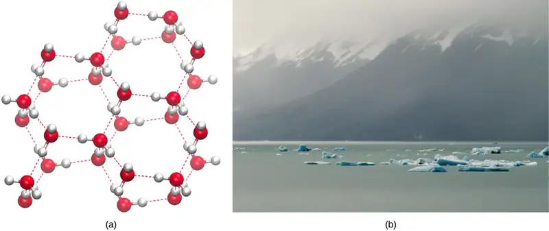
Interactive
Click here to see a 3-D animation of an ice lattice structure.
Water’s High Heat Capacity¶
Water’s high heat capacity is a property that hydrogen bonding among water molecules causes. Water has the highest specific heat capacity of any common liquid. We define specific heat as the amount of heat one gram of a substance must absorb or lose to change its temperature by one degree Celsius. For water, this amount is one calorie. It therefore takes water a long time to heat and a long time to cool. In fact, water's specific heat capacity is about five times more than that of sand. This explains why the land cools faster than the sea. Due to its high heat capacity, warm blooded animals use water to more evenly disperse heat in their bodies: it acts in a similar manner to a car’s cooling system, transporting heat from warm places to cool places, causing the body to maintain a more even temperature.
Water’s Heat of Vaporization¶
Water also has a high heat of vaporization, the amount of energy required to change one gram of a liquid substance to a gas. A considerable amount of heat energy (586 cal) is required to accomplish this change in water. This process occurs on the water's surface. As liquid water heats up, hydrogen bonding makes it difficult to separate the liquid water molecules from each other, which is required for it to enter its gaseous phase (steam). As a result, water acts as a heat sink or heat reservoir and requires much more heat to boil than does a liquid such as ethanol (grain alcohol), whose hydrogen bonding with other ethanol molecules is weaker than water’s hydrogen bonding. Eventually, as water reaches its boiling point of 100° Celsius (212° Fahrenheit), the heat is able to break the hydrogen bonds between the water molecules, and the kinetic energy (motion) between the water molecules allows them to escape from the liquid as a gas. Even when below its boiling point, water’s individual molecules acquire enough energy from other water molecules such that some surface water molecules can escape and vaporize: we call this process evaporation.
The fact that hydrogen bonds need to be broken for water to evaporate means that bonds use a substantial amount of energy in the process. As the water evaporates, energy is taken up by the process, cooling the environment where the evaporation is taking place. In many living organisms, including in humans, the evaporation of sweat, which is 90 percent water, allows the organism to cool so that it can maintain homeostasis of body temperature.
Water’s Solvent Properties¶
Since water is a polar molecule with slightly positive and slightly negative charges, ions and polar molecules can readily dissolve in it. Therefore, we refer to water as a solvent, a substance capable of dissolving other polar molecules and ionic compounds. The charges associated with these molecules will form hydrogen bonds with water, surrounding the particle with water molecules. We refer to this as a sphere of hydration, or a hydration shell, as Figure 2.15 illustrates and serves to keep the particles separated or dispersed in the water.
When we add ionic compounds to water, the individual ions react with the water molecules' polar regions and their ionic bonds are disrupted in the process of dissociation. Dissociation occurs when atoms or groups of atoms break off from molecules and form ions. Consider table salt (NaCl, or sodium chloride): when we add NaCl crystals to water, the NaCl molecules dissociate into Na+ and Cl– ions, and spheres of hydration form around the ions, as Figure 2.15 illustrates. The partially negative charge of the water molecule’s oxygen surrounds the positively charged sodium ion. The hydrogen's partially positive charge on the water molecule surrounds the negatively charged chloride ion.
![When sodium chloride dissolves in water, the positively charged sodium ions interact with the oxygen of water, and the negatively charged chlorine ions interact with the hydrogen of water. A negatively charged chlorine ion is shown surrounded by water molecules whose hydrogen atoms are oriented inward toward the chlorine ion. A positively charged sodium ion is shown surrounded by water molecules whose oxygen atoms are oriented inward toward the sodium ion.chloride dissolves in water, the positively charged sodium ions interact with the oxygen of water, and the negatively charged chlorine ions interact with the hydrogen of water.](img/figure-02-02-03-096d.webp)
Water’s Cohesive and Adhesive Properties¶
Have you ever filled a glass of water to the very top and then slowly added a few more drops? Before it overflows, the water forms a dome-like shape above the rim of the glass. This water can stay above the glass because of the property of cohesion. In cohesion, water molecules are attracted to each other (because of hydrogen bonding), keeping the molecules together at the liquid-gas (water-air) interface, although there is no more room in the glass.
Cohesion allows for surface tension, the capacity of a substance to withstand rupturing when placed under tension or stress. This is also why water forms droplets when on a dry surface rather than flattening by gravity. When we place a small scrap of paper onto a water droplet, the paper floats on top even though paper is denser (heavier) than the water. Cohesion and surface tension keep the water molecules' hydrogen bonds intact and support the item floating on the top. It’s even possible to “float” a needle on top of a glass of water if you place it gently without breaking the surface tension, as Figure 2.16 shows.
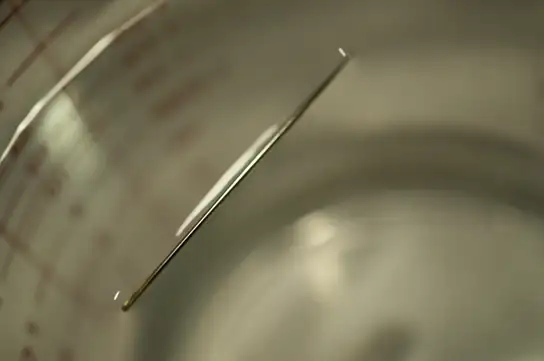
These cohesive forces are related to water’s property of adhesion, or the attraction between water molecules and other molecules. This attraction is sometimes stronger than water’s cohesive forces, especially when the water is exposed to charged surfaces such as those on the inside of thin glass tubes known as capillary tubes. We observe adhesion when water “climbs” up the tube placed in a glass of water: notice that the water appears to be higher on the tube's sides than in the middle. This is because the water molecules are attracted to the capillary's charged glass walls more than they are to each other and therefore adhere to it. We call this type of adhesion capillary action, as Figure 2.17 illustrates.
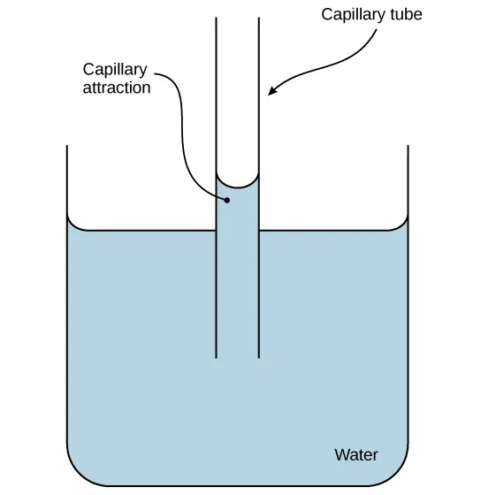
Why are cohesive and adhesive forces important for life? Cohesive and adhesive forces are important for transporting water from the roots to the leaves in plants. These forces create a “pull” on the water column. This pull results from the tendency of water molecules evaporating on the plant's surface to stay connected to water molecules below them, and so they are pulled along. Plants use this natural phenomenon to help transport water from their roots to their leaves. Without these properties of water, plants would be unable to receive the water and the dissolved minerals they require. In another example, insects such as the water strider, as Figure 2.18 shows, use the water's surface tension to stay afloat on the water's surface layer and even mate there.
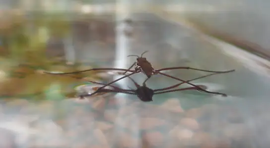
pH, Buffers, Acids, and Bases¶
The pH of a solution indicates its acidity or basicity.
You may have used litmus or pH paper, filter paper treated with a natural water-soluble dye for use as a pH indicator. It tests how much acid (acidity) or base (basicity) exists in a solution. You might have even used some to test whether the water in a swimming pool is properly treated. In both cases, the pH test measures hydrogen ions' concentration in a given solution.
Hydrogen ions spontaneously generate in pure water by the dissociation (ionization) of a small percentage of water molecules into equal numbers of hydrogen (H+) ions and hydroxide (OH-) ions. While the hydroxide ions are kept in solution by their hydrogen bonding with other water molecules, the hydrogen ions, consisting of naked protons, immediately attract to un-ionized water molecules, forming hydronium ions (H3O+). Still, by convention, scientists refer to hydrogen ions and their concentration as if they were free in this state in liquid water.
The concentration of hydrogen ions dissociating from pure water is 1 × 10-7 moles H+ ions per liter of water. Moles (mol) are a way to express the amount of a substance (which can be atoms, molecules, ions, etc.). One mole represents the atomic weight of a substance, expressed in grams, which equals the amount of the substance containing as many units as there are atoms in 12 grams of 12C. Mathematically, one mole is equal to 6.02 × 1023 particles of the substance. Therefore, 1 mole of water is equal to 6.02 × 1023 water molecules. We calculate the pH as the negative of the base 10 logarithm of this concentration. The log10 of 1 × 10-7 is -7.0, and the negative of this number (indicated by the “p” of “pH”) yields a pH of 7.0, which is also a neutral pH. The pH inside of human cells and blood are examples of two body areas where near-neutral pH is maintained.
Non-neutral pH readings result from dissolving acids or bases in water. Using the negative logarithm to generate positive integers, high concentrations of hydrogen ions yield a low pH number; whereas, low levels of hydrogen ions result in a high pH. An acid is a substance that increases hydrogen ions' (H+) concentration in a solution, usually by having one of its hydrogen atoms dissociate. A base provides either hydroxide ions (OH–) or other negatively charged ions that combine with hydrogen ions, reducing their concentration in the solution and thereby raising the pH. In cases where the base releases hydroxide ions, these ions bind to free hydrogen ions, generating new water molecules.
The stronger the acid, the more readily it donates H+. For example, hydrochloric acid (HCl) completely dissociates into hydrogen and chloride ions and is highly acidic; whereas the acids in tomato juice or vinegar do not completely dissociate and are weak acids. Conversely, strong bases are those substances that readily donate OH–or take up hydrogen ions. Sodium hydroxide (NaOH) and many household cleaners are highly alkaline and give up OH– rapidly when we place them in water, thereby raising the pH. An example of a weak basic solution is seawater, which has a pH near 8.0 This is close enough to a neutral pH that marine organisms have adapted in order to live and thrive in a saline environment.
The pH scale is, as we previously mentioned, an inverse logarithm and ranges from 0 to 14 (Figure 2.19). Anything below 7.0 (ranging from 0.0 to 6.9) is acidic, and anything above 7.0 (from 7.1 to 14.0) is alkaline. Extremes in pH in either direction from 7.0 are usually inhospitable to life. The pH inside cells (6.8) and the pH in the blood (7.4) are both very close to neutral. However, the environment in the stomach is highly acidic, with a pH of 1 to 2. As a result, how do stomach cells survive in such an acidic environment? How do they homeostatically maintain the near neutral pH inside them? The answer is that they cannot do it and are constantly dying. The stomach constantly produces new cells to replace dead ones, which stomach acids digest. Scientists estimate that the human body completely replaces the stomach lining every seven to ten days.
![The lower case p upper case H scale, which ranges from zero to 14, sits next to a bar with the colors of the rainbow. The p H of common substances are given. These include gastric acid with a p H around one, lemon juice with a p H around two, orange juice with a p H around three, tomato juice with a p H around four, black coffee with a p H around five, urine with a p H around six, distilled water with a p H around seven, sea water with a p H around eight, baking soda with a p H around nine, milk of magnesia with a p H around ten, ammonia solution with a p H around 11, soapy water with a p H around 12, and bleach with a p H around 13.](img/figure-02-02-07.webp)
Interactive
Watch this video for a straightforward explanation of pH and its logarithmic scale. pH_scale
How can organisms whose bodies require a near-neutral pH ingest acidic and basic substances (a human drinking orange juice, for example) and survive? Buffers are the key. Buffers readily absorb excess H+ or OH–, keeping the body's pH carefully maintained in the narrow range required for survival. Maintaining a constant blood pH is critical to a person’s well-being. The buffer maintaining the pH of human blood involves carbonic acid (H2CO3), bicarbonate ion (HCO3–), and carbon dioxide (CO2). When bicarbonate ions combine with free hydrogen ions and become carbonic acid, it removes hydrogen ions and moderates pH changes. Similarly, as Figure 2.20 shows, excess carbonic acid can convert to carbon dioxide gas which we exhale through the lungs. This prevents too many free hydrogen ions from building up in the blood and dangerously reducing the blood’s pH. Likewise, if too much OH– enters into the system, carbonic acid will combine with it to create bicarbonate, lowering the pH. Without this buffer system, the body’s pH would fluctuate enough to put survival in jeopardy.
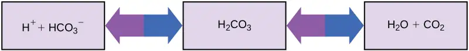
Other examples of buffers are antacids that some people use to combat excess stomach acid. Many of these over-the-counter medications work in the same way as blood buffers, usually with at least one ion capable of absorbing hydrogen and moderating pH, bringing relief to those who suffer “heartburn” after eating. Water's unique properties that contribute to this capacity to balance pH—as well as water’s other characteristics—are essential to sustaining life on Earth.
Interactive
To learn more about water, visit the U.S. Geological Survey Water Science for Schools All About Water! website.
2.3 Carbon¶
Learning Objectives
By the end of this section, you will be able to do the following:
- Explain why carbon is important for life
- Describe the role of functional groups in biological molecules
Many complex molecules called macromolecules, such as proteins, nucleic acids (RNA and DNA), carbohydrates, and lipids comprise cells. The macromolecules are a subset of organic molecules (any carbon-containing liquid, solid, or gas) that are especially important for life. The fundamental component for all of these macromolecules is carbon. The carbon atom has unique properties that allow it to form covalent bonds to as many as four different atoms, making this versatile element ideal to serve as the basic structural component, or “backbone,” of the macromolecules.
Individual carbon atoms have an incomplete outermost electron shell. With an atomic number of 6 (six electrons and six protons), the first two electrons fill the inner shell, leaving four in the second shell. Therefore, carbon atoms can form up to four covalent bonds with other atoms to satisfy the octet rule. The methane molecule provides an example: it has the chemical formula CH4. Each of its four hydrogen atoms forms a single covalent bond with the carbon atom by sharing a pair of electrons. This results in a filled outermost shell.
Hydrocarbons¶
Hydrocarbons are organic molecules consisting entirely of carbon and hydrogen, such as methane (CH4) described above. We often use hydrocarbons in our daily lives as fuels—like the propane in a gas grill or the butane in a lighter. The many covalent bonds between the atoms in hydrocarbons store a great amount of energy, which releases when these molecules burn (oxidize). Methane, an excellent fuel, is the simplest hydrocarbon molecule, with a central carbon atom bonded to four different hydrogen atoms, as Figure 2.21 illustrates. The shape of its electron orbitals determines the shape of the methane molecule's geometry, where the atoms reside in three dimensions. The carbons and the four hydrogen atoms form a tetrahedron, with four triangular faces. For this reason, we describe methane as having tetrahedral geometry.
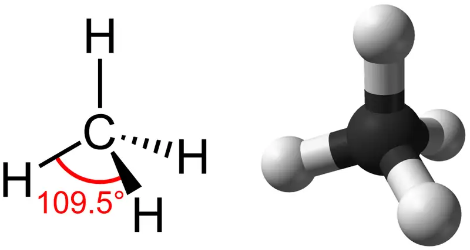
As the backbone of the large molecules of living things, hydrocarbons may exist as linear carbon chains, carbon rings, or combinations of both. Furthermore, individual carbon-to-carbon bonds may be single, double, or triple covalent bonds, and each type of bond affects the molecule's geometry in a specific way. This three-dimensional shape or conformation of the large molecules of life (macromolecules) is critical to how they function.
Hydrocarbon Chains¶
Successive bonds between carbon atoms form hydrocarbon chains. These may be branched or unbranched. Furthermore, a molecule's different geometries of single, double, and triple covalent bonds alter the overall molecule's geometry as Figure 2.22 illustrates. The hydrocarbons ethane, ethene, and ethyne serve as examples of how different carbon-to-carbon bonds affect the molecule's geometry. The names of all three molecules start with the prefix “eth-,” which is the prefix for two carbon hydrocarbons. The suffixes “-ane,” “-ene,” and “-yne” refer to the presence of single, double, or triple carbon-carbon bonds, respectively. Thus, propane, propene, and propyne follow the same pattern with three carbon molecules, butane, butene, and butyne for four carbon molecules, and so on. Double and triple bonds change the molecule's geometry: single bonds allow rotation along the bond's axis; whereas, double bonds lead to a planar configuration and triple bonds to a linear one. These geometries have a significant impact on the shape a particular molecule can assume.
![Methane, the simplest hydrocarbon, is composed of four hydrogen atoms surrounding a central carbon. The bond between the four hydrogen atoms and the central carbon spaced as far apart as possible. This results in a tetrahedral shape with hydrogen atoms projecting upward and off to three sides around the central carbon. Ethane is composed of two carbons connected by a single bond. Each carbon also has three hydrogen atoms connected to it. The hydrogens are spaced as far apart from each other and from the other carbon so again the shape is tetrahedral. Ethene, like ethane, is composed of two carbon atoms, but in this case the carbons are connected by a double bond. Each carbon also has two hydrogen atoms connected to it, for a total of three bonds. The three bonds are spaced as far apart as possible around carbon, which means they are all on the same plane and pointing off in three directions. As a result, the molecule is planar, or flat.](img/figure-02-03-02-d747.webp)
Hydrocarbon Rings¶
So far, the hydrocarbons we have discussed have been aliphatic hydrocarbons, which consist of linear chains of carbon atoms, and sometimes they can form rings with all single bonds, as shown in Figure 2.23 in the examples of cyclopentane and cyclohexane. Another type of hydrocarbon, aromatic hydrocarbons, consists of closed rings of carbon atoms with alternating single and double bonds. We find ring structures in aliphatic hydrocarbons, containing only single bonds between carbons, like the cyclohexane's structure (aliphatic) compared to a ring structure of benzene (aromatic) with alternating single and double bonds in the ring in Figure 2.23. Examples of biological molecules that incorporate the benzene ring include some amino acids and cholesterol and its derivatives, including the hormones estrogen and testosterone. We also find the benzene ring in the herbicide 2,4-D. Benzene is a natural component of crude oil and has been classified as a carcinogen. Some hydrocarbons have both aliphatic and aromatic portions. Beta-carotene is an example of such a hydrocarbon.
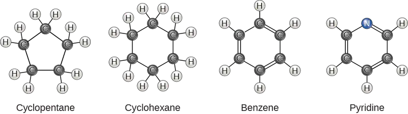
Isomers¶
The three-dimensional placement of atoms and chemical bonds within organic molecules is central to understanding their chemistry. We call molecules that share the same chemical formula but differ in the placement (structure) of their atoms and/or chemical bonds isomers. Structural isomers (like butane and isobutane in Figure 2.24a) differ in the placement of their covalent bonds: both molecules have four carbons and ten hydrogens (C4H10), but the different atom arrangement within the molecules leads to differences in their chemical properties. For example, butane is suited for use as a fuel for cigarette lighters and torches; whereas, isobutane is suited for use as a refrigerant and a propellant in spray cans.
Geometric isomers, alternatively have similar placements of their covalent bonds but differ in how these bonds are made to the surrounding atoms, especially in carbon-to-carbon double bonds. In the simple molecule butene (C4H8), the two methyl groups (CH3) can be on either side of the double covalent bond central to the molecule, as Figure 2.24b illustrates. When the carbons are bound on the same side of the double bond, this is the cis configuration. If they are on opposite sides of the double bond, it is a trans configuration. In the trans configuration, the carbons form a more or less linear structure; whereas, the carbons in the cis configuration make a bend (change in direction) of the carbon backbone.
Visual Connection
![Part A shows butane and isobutane are structural isomers. Both molecules have four carbons and ten hydrogens, but in butane the carbons form a single chain, while in isobutane the carbons form a branched chain. Part B shows cis dash 2 butene and trans dash 2 butene each consist of a four-carbon chain. The two central carbons are connected by a double bond resulting in a planar, or flat shape. In the cis isomer, both terminal upper case C upper case H subscript 3 baseline groups are on the same side of the plane, and two hydrogen atoms are on the opposite side. Imagine a person with arms stretched out and upwards and legs spread apart, with a glove on the left hand and a sock on the left foot: this represents a cis configuration. In cis-butene the terminal upper C upper H subscript 3 baseline groups are on opposite sides of the plane. Now, imagine a person with outstretched arms and legs, but this time with a glove on the left hand and a sock on the right foot: this is what a trans configuration looks like. Part C shows two enantiomers, each with different arrangement of hydrogen, bromine, chlorine and fluorine around a central carbon. The molecules are mirror images of one another.](img/figure-02-03-04.webp)
Which of the following statements is false?
- Molecules with the formulas CH3CH2COOH and C3H6O2 could be structural isomers.
- Molecules must have a double bond to be cis-trans isomers.
- To be enantiomers, a molecule must have at least three different atoms or groups connected to a central carbon.
- To be enantiomers, a molecule must have at least four different atoms or groups connected to a central carbon.
In triglycerides (fats and oils), long carbon chains known as fatty acids may contain double bonds, which can be in either the cis or trans configuration, as Figure 2.25 illustrates. Fats with at least one double bond between carbon atoms are unsaturated fats. When some of these bonds are in the cis configuration, the resulting bend in the chain's carbon backbone means that triglyceride molecules cannot pack tightly, so they remain liquid (oil) at room temperature. Alternatively, triglycerides with trans double bonds (popularly called trans fats), have relatively linear fatty acids that are able to pack tightly together at room temperature and form solid fats. In the human diet, trans fats are linked to an increased risk of cardiovascular disease, so many food manufacturers have reduced or eliminated their use in recent years. In contrast to unsaturated fats, we call triglycerides without double bonds between carbon atoms saturated fats, meaning that they contain all the hydrogen atoms available. Saturated fats are a solid at room temperature and usually of animal origin.
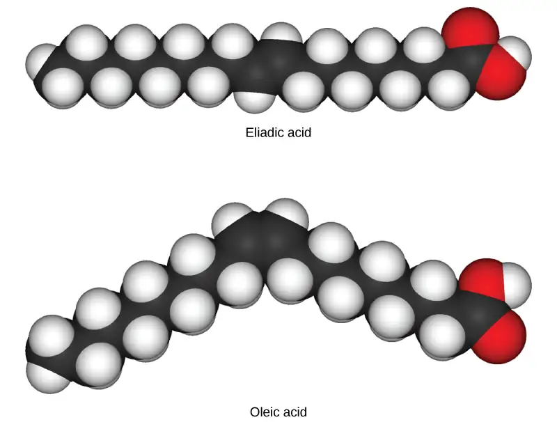
Enantiomers¶
Enantiomers are molecules that share the same chemical structure and chemical bonds but differ in the three-dimensional placement of atoms so that they are non-superimposable mirror images. Figure 2.26 shows an amino acid alanine example, where the two structures are nonsuperimposable. In nature, the L-forms of amino acids are predominant in proteins. Some D forms of amino acids are seen in the cell walls of bacteria and polypeptides in other organisms. Similarly, the D-form of glucose is the main product of photosynthesis and we rarely see the molecule's L-form in nature.
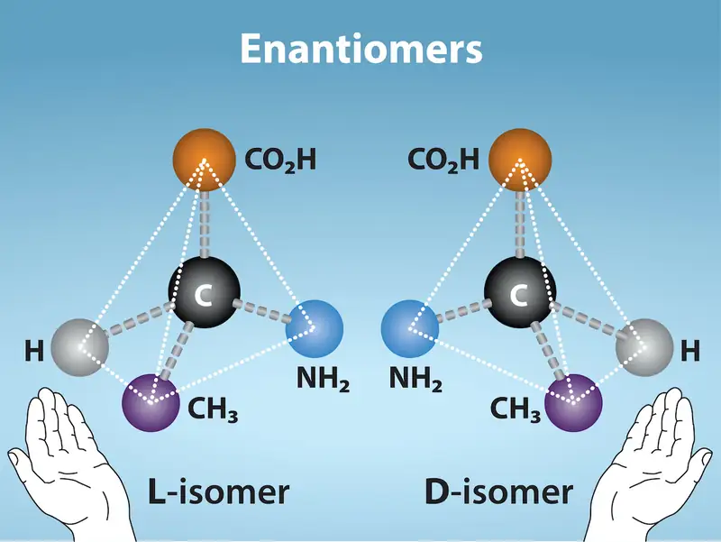
Functional Groups¶
Functional groups are groups of atoms that occur within molecules and confer specific chemical properties to those molecules. We find them along the “carbon backbone” of macromolecules. Chains and/or rings of carbon atoms with the occasional substitution of an element such as nitrogen or oxygen form this carbon backbone. Molecules with other elements in their carbon backbone are substituted hydrocarbons.
The functional groups in a macromolecule are usually attached to the carbon backbone at one or several different places along its chain and/or ring structure. Each of the four types of macromolecules—proteins, lipids, carbohydrates, and nucleic acids—has its own characteristic set of functional groups that contributes greatly to its differing chemical properties and its function in living organisms.
A functional group can participate in specific chemical reactions. Figure 2.27 shows some of the important functional groups in biological molecules. They include: hydroxyl, methyl, carbonyl, carboxyl, amino, phosphate, and sulfhydryl. These groups play an important role in forming molecules like DNA, proteins, carbohydrates, and lipids. We usually classify functional groups as hydrophobic or hydrophilic depending on their charge or polarity characteristics. An example of a hydrophobic group is the nonpolar methyl molecule. Among the hydrophilic functional groups is the carboxyl group in amino acids, some amino acid side chains, and the fatty acids that form triglycerides and phospholipids. This carboxyl group ionizes to release hydrogen ions (H+) from the COOH group resulting in the negatively charged COO- group. This contributes to the hydrophilic nature of whatever molecule on which it is found. Other functional groups, such as the carbonyl group, have a partially negatively charged oxygen atom that may form hydrogen bonds with water molecules, again making the molecule more hydrophilic.
![Table shows the structure and properties of different functional groups. Hydroxyl groups, which consist of upper case O upper case H attached to a carbon chain, are polar. Methyl groups, which consist of three hydrogens attached to a carbon chain, are nonpolar. Carbonyl groups, which consist of an oxygen double bonded to a carbon in the middle of a hydrocarbon chain, are polar. Carboxyl groups, which consist of a carbon with a double bonded oxygen and an upper O upper H group attached to a carbon chain, are able to ionize, releasing H positive ions into solution. Carboxyl groups are considered acidic. Amino groups, which consist of two hydrogens attached to a nitrogen, are able to accept H positive ions from solution, forming H subscript 3 baseline positive. Amino groups are considered basic. Phosphate groups consist of a phosphorous with one double bonded oxygen and two upper O upper H groups. Another oxygen forms a link from the phosphorous to a carbon chain. Both upper O upper H groups in phosphorous can lose an H positive ion, and phosphate groups are considered acidic. Sulfhydryl group has an upper-case S upper-case H group bonded to a carbon chain. The bond is polar due to the small difference in electronegativity of sulfur and hydrogen.](img/figure-02-03-07-41a2.webp)
Hydrogen bonds between functional groups (within the same molecule or between different molecules) are important to the function of many macromolecules and help them to fold properly into and maintain the appropriate shape for functioning. Hydrogen bonds are also involved in various recognition processes, such as DNA complementary base pairing and the binding of an enzyme to its substrate, as Figure 2.28 illustrates.
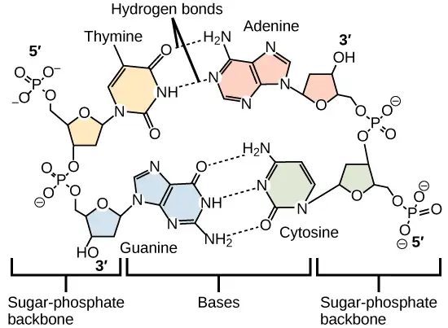
Chapter Review¶
Key Terms¶
- acid
- molecule that donates hydrogen ions and increases the concentration of hydrogen ions in a solution
- adhesion
- attraction between water molecules and other molecules
- aliphatic hydrocarbon
- hydrocarbon consisting of a linear chain of carbon atoms
- anion
- negative ion that is formed by an atom gaining one or more electrons
- aromatic hydrocarbon
- hydrocarbon consisting of closed rings of carbon atoms
- atom
- the smallest unit of matter that retains all of the chemical properties of an element
- atomic number
- total number of protons in an atom
- atomic weight
- calculated mean of the atomic weights of an element’s isotopes
- balanced chemical equation
- statement of a chemical reaction with the number of each type of atom equalized for both the products and reactants
- base
- molecule that donates hydroxide ions or otherwise binds excess hydrogen ions and decreases the hydrogen ions' concentration in a solution
- buffer
- substance that resists a change in pH by absorbing or releasing hydrogen or hydroxide ions
- calorie
- amount of heat required to change the temperature of one gram of water by one degree Celsius
- capillary action
- occurs because water molecules are attracted to charges on the inner surfaces of narrow tubular structures such as glass tubes, drawing the water molecules to the tubes' sides
- cation
- positive ion that is formed by an atom losing one or more electrons
- chemical bond
- interaction between two or more of the same or different atoms that results in forming molecules
- chemical reaction
- process leading to rearranging atoms in molecules
- chemical reactivity
- the ability to combine and to chemically bond with each other
- cohesion
- intermolecular forces between water molecules caused by the polar nature of water; responsible for surface tension
- compound
- substance composed of molecules consisting of atoms of at least two different elements
- covalent bond
- type of strong bond formed between two atoms of the same or different elements; forms when electrons are shared between atoms
- dissociation
- release of an ion from a molecule such that the original molecule now consists of an ion and the charged remains of the original, such as when water dissociates into H+ and OH-
- electrolyte
- ion necessary for nerve impulse conduction, muscle contractions, and water balance
- electron
- negatively charged subatomic particle that resides outside of the nucleus in the electron orbital; lacks functional mass and has a negative charge of –1 unit
- electron configuration
- arrangement of electrons in an atom’s electron shell (for example, 1s22s22p6)
- electron orbital
- how electrons are spatially distributed surrounding the nucleus; the area where we are most likely to find an electron
- electron transfer
- movement of electrons from one element to another; important in creating ionic bonds
- electronegativity
- ability of some elements to attract electrons (often of hydrogen atoms), acquiring partial negative charges in molecules and creating partial positive charges on the hydrogen atoms
- element
- one of 118 unique substances that cannot break down into smaller substances; each element has unique properties and a specified number of protons
- enantiomers
- molecules that share overall structure and bonding patterns, but differ in how the atoms are three dimensionally placed such that they are mirror images of each other
- equilibrium
- steady state of relative reactant and product concentration in reversible chemical reactions in a closed system
- evaporation
- change from liquid to gaseous state at a body of water's surface, plant leaves, or an organism's skin
- functional group
- group of atoms that provides or imparts a specific function to a carbon skeleton
- geometric isomer
- isomer with similar bonding patterns differing in the placement of atoms alongside a double covalent bond
- heat of vaporization of water
- high amount of energy required for liquid water to turn into water vapor
- hydrocarbon
- molecule that consists only of carbon and hydrogen
- hydrogen bond
- weak bond between slightly positively charged hydrogen atoms and slightly negatively charged atoms in other molecules
- hydrophilic
- describes ions or polar molecules that interact well with other polar molecules such as water
- hydrophobic
- describes uncharged nonpolar molecules that do not interact well with polar molecules such as water
- inert gas
- (also, noble gas) element with filled outer electron shell that is unreactive with other atoms
- ion
- atom or chemical group that does not contain equal numbers of protons and electrons
- ionic bond
- chemical bond that forms between ions with opposite charges (cations and anions)
- irreversible chemical reaction
- chemical reaction where reactants proceed unidirectionally to form products
- isomers
- molecules that differ from one another even though they share the same chemical formula
- isotope
- one or more forms of an element that have different numbers of neutrons
- law of mass action
- chemical law stating that the rate of a reaction is proportional to the concentration of the reacting substances
- litmus paper
- (also, pH paper) filter paper treated with a natural water-soluble dye that changes its color as the pH of the environment changes in order to use it as a pH indicator
- mass number
- total number of protons and neutrons in an atom
- matter
- anything that has mass and occupies space
- molecule
- two or more atoms chemically bonded together
- neutron
- uncharged particle that resides in an atom's nucleus; has a mass of one amu
- noble gas
- see inert gas
- nonpolar covalent bond
- type of covalent bond that forms between atoms when electrons are shared equally between them
- nucleus
- core of an atom; contains protons and neutrons
- octet rule
- rule that atoms are most stable when they hold eight electrons in their outermost shells
- orbital
- region surrounding the nucleus; contains electron(s)
- organic molecule
- any molecule containing carbon (except carbon dioxide)
- periodic table
- organizational chart of elements indicating each element's atomic number and atomic mass; provides key information about the elements' properties
- pH paper
- see litmus paper
- pH scale
- scale ranging from zero to 14 that is inversely proportional to the hydrogen ions' concentration in a solution
- polar covalent bond
- type of covalent bond that forms as a result of unequal electron sharing, resulting in creating slightly positive and negative charged molecule regions
- product
- molecule that is result of chemical reaction
- proton
- positively charged particle that resides in the atom's nucleus; has a mass of one amu and a charge of +1
- radioisotope
- isotope that emits radiation comprised of subatomic particles to form more stable elements
- reactant
- molecule that takes part in a chemical reaction
- reversible chemical reaction
- chemical reaction that functions bidirectionally, where products may turn into reactants if their concentration is great enough
- solvent
- substance capable of dissolving another substance
- specific heat capacity
- the amount of heat one gram of a substance must absorb or lose to change its temperature by one degree Celsius
- sphere of hydration
- when a polar water molecule surrounds charged or polar molecules thus keeping them dissolved and in solution
- structural isomers
- molecules that share a chemical formula but differ in the placement of their chemical bonds
- substituted hydrocarbon
- hydrocarbon chain or ring containing an atom of another element in place of one of the backbone carbons
- surface tension
- tension at the surface of a body of liquid that prevents the molecules from separating; created by the attractive cohesive forces between the liquid's molecules
- valence shell
- outermost shell of an atom
- van der Waals interaction
- very weak interaction between molecules due to temporary charges attracting atoms that are very close together
Summary¶
2.1 Atoms, Isotopes, Ions, and Molecules: The Building Blocks¶
Matter is anything that occupies space and has mass. It is comprised of elements. All of the 98 elements that occur naturally have unique qualities that allow them to combine in various ways to create molecules, which in turn combine to form cells, tissues, organ systems, and organisms. Atoms, which consist of protons, neutrons, and electrons, are the smallest units of an element that retain all of the properties of that element. Electrons can transfer, share, or cause charge disparities between atoms to create bonds, including ionic, covalent, and hydrogen bonds, as well as van der Waals interactions.
2.2 Water¶
Water has many properties that are critical to maintaining life. It is a polar molecule, allowing for forming hydrogen bonds. Hydrogen bonds allow ions and other polar molecules to dissolve in water. Therefore, water is an excellent solvent. The hydrogen bonds between water molecules cause the water to have a high heat capacity, meaning it takes considerable added heat to raise its temperature. As the temperature rises, the hydrogen bonds between water continually break and form anew. This allows for the overall temperature to remain stable, although energy is added to the system. Water also exhibits a high heat of vaporization, which is key to how organisms cool themselves by evaporating sweat. Water’s cohesive forces allow for the property of surface tension; whereas, we see its adhesive properties as water rises inside capillary tubes. The pH value is a measure of hydrogen ion concentration in a solution and is one of many chemical characteristics that is highly regulated in living organisms through homeostasis. Acids and bases can change pH values, but buffers tend to moderate the changes they cause. These properties of water are intimately connected to the biochemical and physical processes performed by living organisms, and life would be very different if these properties were altered, if it could exist at all.
2.3 Carbon¶
The unique properties of carbon make it a central part of biological molecules. Carbon binds to oxygen, hydrogen, and nitrogen covalently to form the many molecules important for cellular function. Carbon has four electrons in its outermost shell and can form four bonds. Carbon and hydrogen can form hydrocarbon chains or rings. Functional groups are groups of atoms that confer specific properties to hydrocarbon (or substituted hydrocarbon) chains or rings that define their overall chemical characteristics and function.
Visual Connection Questions¶
2.1 Atoms, Isotopes, Ions, and Molecules: The Building Blocks¶
1. Figure 2.3 How many neutrons do carbon-12 and carbon-13 have, respectively?
Answer
Figure 2.3 Carbon-12 has six neutrons. Carbon-13 has seven neutrons.
2. Figure 2.7 An atom may give, take, or share electrons with another atom to achieve a full valence shell, the most stable electron configuration. Looking at this figure, how many electrons do elements in group 1 need to lose in order to achieve a stable electron configuration? How many electrons do elements in groups 14 and 17 need to gain to achieve a stable configuration?
Answer
Figure 2.7 Elements in group 1 need to lose one electron to achieve a stable electron configuration. Elements in groups 14 and 17 need to gain four and one electrons, respectively, to achieve a stable configuration.
2.3 Carbon¶
3. Figure 2.24 Which of the following statements is false?
- Molecules with the formulas CH3CH2COOH and C3H6O2 could be structural isomers.
- Molecules must have a double bond to be cis-trans isomers.
- To be enantiomers, a molecule must have at least three different atoms or groups connected to a central carbon.
- To be enantiomers, a molecule must have at least four different atoms or groups connected to a central carbon.
Answer
Review Questions¶
2.1 Atoms, Isotopes, Ions, and Molecules: The Building Blocks¶
4. If xenon has an atomic number of 54 and a mass number of 108, how many neutrons does it have?
- 54
- 27
- 100
- 108
Answer
A
5. Atoms that vary in the number of neutrons found in their nuclei are called ________.
- ions
- neutrons
- neutral atoms
- isotopes
Answer
D
6. Potassium has an atomic number of 19. What is its electron configuration?
- shells 1 and 2 are full, and shell 3 has nine electrons
- shells 1, 2 and 3 are full and shell 4 has three electrons
- shells 1, 2 and 3 are full and shell 4 has one electron
- shells 1, 2 and 3 are full and no other electrons are present
Answer
C
7. Which type of bond represents a weak chemical bond?
- hydrogen bond
- atomic bond
- covalent bond
- nonpolar covalent bond
Answer
A
2.2 Water¶
8. Which of the following statements is not true?
- Water is polar.
- Water stabilizes temperature.
- Water is essential for life.
- Water is the most abundant molecule in the Earth’s atmosphere.
Answer
D
9. When acids are added to a solution, the pH should ________.
- decrease
- increase
- stay the same
- cannot tell without testing
Answer
A
10. We call a molecule that binds up excess hydrogen ions in a solution a(n) ________.
- acid
- isotope
- base
- donator
Answer
C
11. Which of the following statements is true?
- Acids and bases cannot mix together.
- Acids and bases will neutralize each other.
- Acids, but not bases, can change the pH of a solution.
- Acids donate hydroxide ions (OH–); bases donate hydrogen ions (H+).
Answer
B
2.3 Carbon¶
12. Each carbon atom can bond with as many as________ other atom(s) or molecule(s).
- one
- two
- six
- four
Answer
D
13. Which of the following is not a functional group that can bond with carbon?
- sodium
- hydroxyl
- phosphate
- carbonyl
Answer
A
Critical Thinking Questions¶
2.1 Atoms, Isotopes, Ions, and Molecules: The Building Blocks¶
14. What makes ionic bonds different from covalent bonds?
Answer
Ionic bonds are created between ions. The electrons are not shared between the atoms, but rather are associated more with one ion than the other. Ionic bonds are strong bonds, but are weaker than covalent bonds, meaning it takes less energy to break an ionic bond compared with a covalent one.
15. Why are hydrogen bonds and van der Waals interactions necessary for cells?
Answer
Hydrogen bonds and van der Waals interactions form weak associations between different molecules or within different regions of the same molecule. They provide the structure and shape necessary for proteins and DNA within cells so that they function properly.
2.2 Water¶
16. Discuss how buffers help prevent drastic swings in pH.
Answer
Buffers absorb the free hydrogen ions and hydroxide ions that result from chemical reactions. Because they can bond these ions, they prevent increases or decreases in pH. An example of a buffer system is the bicarbonate system in the human body. This system is able to absorb hydrogen and hydroxide ions to prevent changes in pH and keep cells functioning properly.
17. Why can some insects walk on water?
Answer
Some insects can walk on water, although they are heavier (denser) than water, because of the surface tension of water. Surface tension results from cohesion, or the attraction between water molecules at the surface of the body of water (the liquid-air/gas interface).
2.3 Carbon¶
18. What property of carbon makes it essential for organic life?
Answer
Carbon is unique and found in all living things because it can form up to four covalent bonds between atoms or molecules. These can be nonpolar or polar covalent bonds, and they allow for the formation of long chains of carbon molecules that combine to form proteins and DNA.
19. Compare and contrast saturated and unsaturated triglycerides.
Answer
Saturated triglycerides contain no double bonds between carbon atoms; they are usually solid at room temperature. Unsaturated triglycerides contain at least one double bond between carbon atoms and are usually liquid at room temperature.
Adapted from Biology 2e by OpenStax, licensed under CC BY 4.0. Access the original for free at openstax.org. Changes: converted to the web reading format of The Open Book Project.
-
W. Humphrey W., A. Dalke, and K. Schulten, “VMD—Visual Molecular Dynamics,” Journal of Molecular Graphics 14 (1996): 33-38. ↩